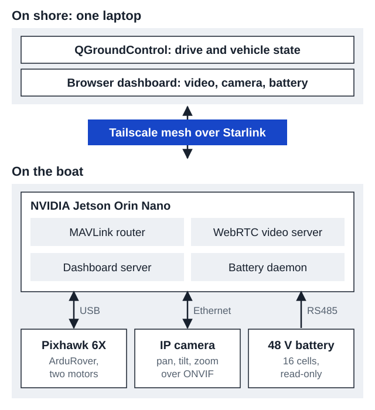

Boat control and telemetry
The boat that carries the drone dock has to be driven and monitored from shore. I wired its power system and set up the control link, the camera page and the battery telemetry. On August 3, 2026 it all ran together on the bench with the propellers off. It hasn't been on the water yet.

Setup
- Control: QGroundControl on a laptop talks to the Pixhawk 6X (ArduRover) through a Jetson Orin Nano, over Tailscale on Starlink.
- Camera and battery: a Python page served from the Jetson shows WebRTC video, pan-tilt-zoom controls and battery data.
- Power: a 48 V battery bus with 24, 12 and 5 V converters and an inverter. I assembled and crimped the harness.
Battery telemetry
The battery's monitor port had no documentation. I first wired it up as plain serial and got nothing back. Measuring 160 ohms across the two data wires showed it was RS485. It didn't answer Modbus or the other common battery protocols either, so I wrote a script that tries each protocol at each baud rate.
# six baud rates: 9600, 115200, 19200, 57600, 38400, 4800
for baud in BAUDS:
s = serial.Serial(port, baud, bytesize=8, parity="N",
stopbits=1, timeout=0.4)
# eight frames: LiTime, Modbus x3, PACE, JBD, Daly, JK
for name, frame in FRAMES:
s.reset_input_buffer()
s.write(frame); s.flush()
time.sleep(0.05)
resp = s.read(256)
if resp:
print(f" {name:<11} -> {resp.hex(' ')}")It answered a LiTime frame at 19,200 baud. An open-source decoder (calledit/LiTime_BMS_bluetooth) already had the frame layout, so I adapted it for the wired link. The readings matched the pack: 52.96 V, 48%, 16 cells. The daemon only sends the read command.
Other fixes
- mavlink-router died at boot because ModemManager grabs the Pixhawk's serial port. A retry loop gets around it for now.
- The joystick moved but the motors didn't. The RC min, max and trim values had never been set.
- The browser couldn't play the camera's H.265 stream, so I switched the camera's second stream to H.264.
- The Teensy 4.1 between the Pixhawk and the vehicle control board was powered from two places. It now runs from one 24 V to 5 V converter, with the USB power trace cut.
- An Arduino UNO R4 WiFi died from servo back-EMF. I recovered its ESP32-S3 side.